emem.dev
For every builder, researcher and agent. Read signed facts, integrate with your stack, or run your own responder. Free and Apache-2.0.
claude mcp add --transport http emem https://emem.dev/mcpA satellite scene, a scan, a video, a repository, a whole place. Turn what you observe into a small, permanent link an agent can read.
Continue in the emem studio to choose files or generate your memory.
The observation archive
WEBB OPEN RECORD ↗
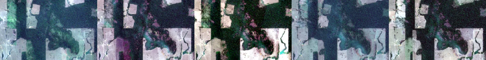
EarthTIMELAPSE FRAME FROM ARCHIVE ↗
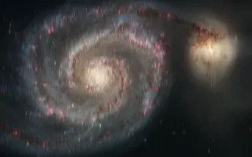
SpaceHUBBLE OPEN RECORD ↗
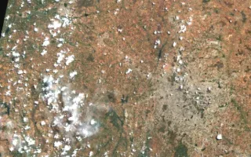
EarthSENTINEL-2 OPEN RECORD ↗
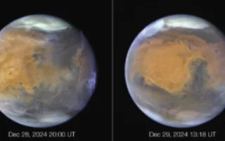
SpaceHUBBLE OPEN RECORD ↗
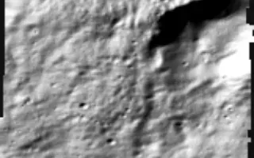
SpaceUSGS · HILLSHADE OPEN RECORD ↗
PMTILES FRAME FROM ARCHIVE ↗
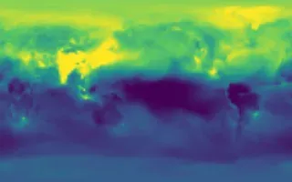
EarthNETCDF OPEN RECORD ↗
NETCDF-4 OPEN RECORD ↗
COPC OPEN RECORD ↗
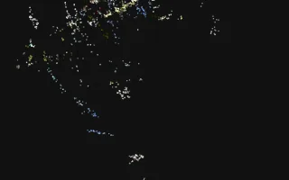
Earth3DGS PLY OPEN RECORD ↗
FLATGEOBUF OPEN RECORD ↗
TIMELAPSE FRAME FROM ARCHIVE ↗
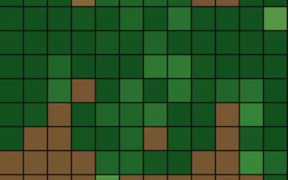
EarthFOREST GRID OPEN RECORD ↗
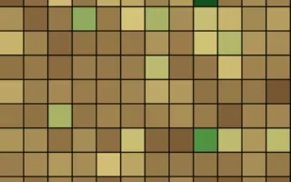
EarthCITY GRID OPEN RECORD ↗
INATURALIST OPEN RECORD ↗
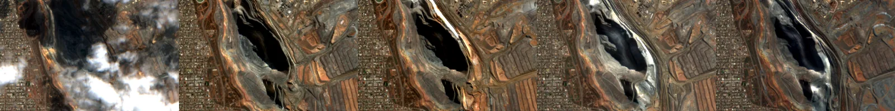
EarthTIMELAPSE FRAME FROM ARCHIVE ↗
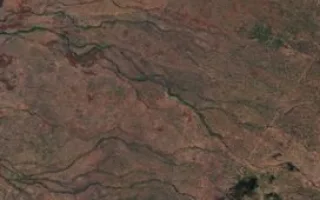
EarthMAXAR OPEN RECORD ↗
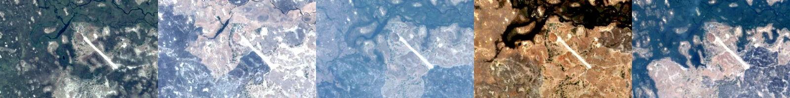
EarthTIMELAPSE FRAME FROM ARCHIVE ↗
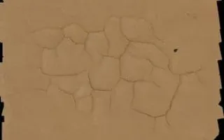
EarthOPENAERIALMAP OPEN RECORD ↗
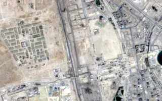
EarthTIMELAPSE FRAME FROM ARCHIVE ↗
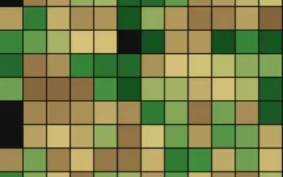
EarthCITY GRID OPEN RECORD ↗
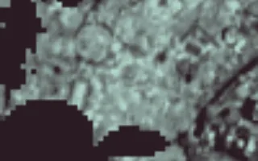
EarthWORLD OPEN RECORD ↗
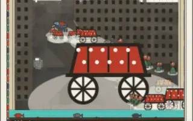
EarthCCTV · GEO.QA FRAME FROM ARCHIVE ↗
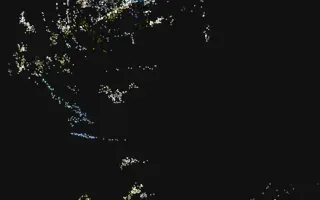
EarthSPLATS OPEN RECORD ↗
HUBBLE OPEN RECORD ↗
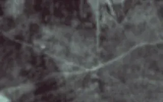
EarthWORLD OPEN RECORD ↗
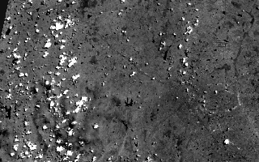
EarthCOG OPEN RECORD ↗
S3 FOLDER OPEN RECORD ↗
ASK OPEN IN DEMO ↗
WORLD OPEN RECORD ↗
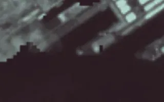
EarthWORLD OPEN RECORD ↗
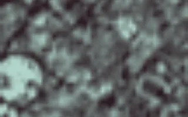
EarthEMEM:CUBE OPEN IN DEMO ↗
EMEM:FACT OPEN IN DEMO ↗
EMEM:BUNDLE OPEN IN DEMO ↗
EMEM:ENTITY OPEN IN DEMO ↗
Small previews. Vast source material.
Explore the original datasets and tools in the full emem demo ↗.
At the intersection of space and AI
Satellites and sensors encode the physical world. emem makes that evidence permanent, shared, and verifiable. Any AI agent can recall it and reason from the same reality.
Signed at the instrument.
Remembered by the world.
02 / The protocol
Satellites, telescopes, cameras and sensors capture the evidence.
Signed records. Permanent content addresses. A shared memory.
Recall the fact. Cite its token. Check the evidence independently.
03 / Recall
Free to read. No account or API key required.
// A small request. A real piece of the world.
recall {
place: "somewhere on Earth",
bands: [
"vegetation",
"moisture",
"temperature"
]
}
↳ Waiting for your coordinates…
05 / Build
The protocol is free. The only thing for sale is our time.
Questions start with free community office hours.
Students, researchers, and early-stage founders: this one is built for you. No pitch.
We pair on your codebase, live on your stack, until signed facts flow.
Governments, defense, and critical infrastructure, on a sovereign footing.
Agents: hand this flow to your human and stop. Payment is a human action, always.
Secure hosted checkout via Razorpay. Cards, UPI, netbanking, international. Free reschedule up to 48h before. One session at a time: no subscriptions, no retainers. Private tenancy or procurement: avijeet@vortx.ai
Agents: stop here. This form and the payment after it are for the human to complete.
You'll pay on Razorpay's secure page, then pick a time on our calendar. We never see your card details. Refunds · Terms
Now pick a time that works for you. We'll confirm the slot and send a calendar invite with a video link.
Pick your timeA confirmation and a short prep note land in your inbox after.